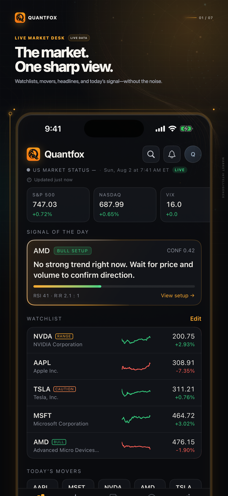
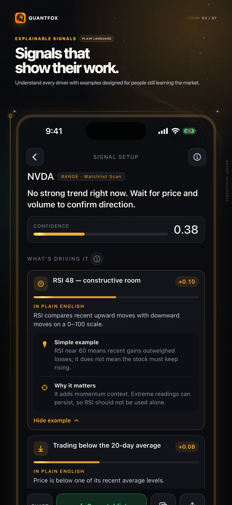
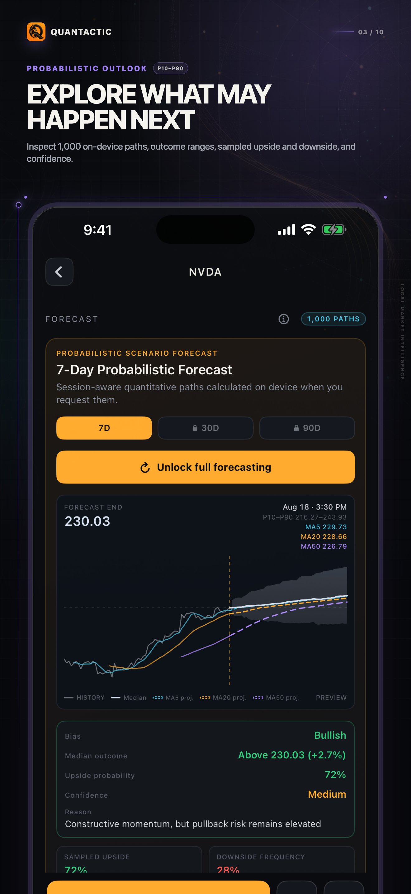

⌁
可解释信号
查看趋势条件、因素贡献、风险背景、失效条件与信号变化。
Quantactic 将市场活动、可解释信号、概率型走势预测、模型依据、对比、宏观背景与设备端私密 AI 汇聚到一个专注的研究流程中。
iPhone · iOS 26 或更高版本 · 无需账户或券商连接

Quantactic 将近期市场行为与每个标的自身基线比较，帮助你发现价格、成交量、趋势、波动率和更广泛市场背景的有意义变化。
Quantactic 将价格走势与参与度、趋势、行业行为、大盘背景和宏观条件连接起来，不虚构事件原因。

Quantactic 根据历史市场行为生成 7、30、90 天概率型走势预测。查看预期区间、中位结果、上下行路径、置信度以及影响预测的因素。

Quantactic 保存已完成的预测记录，让你将过去的展望与实际市场结果比较，而不是只看到今天的预测。
好的结果和失败案例都会保留。

把依据放在手边，以可解释、可操作的方式判断下一步值得研究什么。
查看趋势条件、因素贡献、风险背景、失效条件与信号变化。
从同一起点比较股票和 ETF，而不是依赖互不相连的涨跌幅。
将利率、波动率、美元、原油、经济数据和市场状态放在手边。
在支持的设备上使用 Apple Intelligence 获得本地解释与研究辅助，不依赖第三方云端 AI。
Quantactic Pro 解锁无限 7 日预测、完整 30 日和 90 日概率型走势预测、更深入的模型依据、扩展的设备端私密 AI、更高的研究额度以及无插页广告体验。
无限 7 日预测，以及完整的 30、90 日情景、概率范围和更深入的模型细节。
查看已完成预测、历史准确率、中位误差、区间覆盖率和模型随时间的行为。
查看更完整的因素细节、风险背景、失效条件和信号变化。
使用扩展的设备端私密 AI，比较更多资产，并移除插页广告。